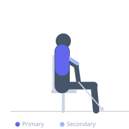
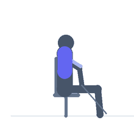

Exercise guide / Seated Cable Row High Pull
Seated Cable Row High Pull
The seated cable row high pull uses a rope attachment at a low or mid cable position and pulls toward the face/neck rather than the abdomen, with elbows flaring wide at shoulder height. It bridges the gap between a standard row and a face pull, training the rear deltoids, upper trapezius, and external rotators through a horizontally-abducted pulling pattern while seated.
Primary muscles
deltoid posterior
trapezius middle
Secondary muscles
rhomboid major
biceps brachii
Stabilizers
erector spinae
Equipment
Cable Machine (High Pulley)


Starting position
- Sit facing a cable pulley set at low or mid-height. Attach a rope. Grip with both hands, arms extended forward.
Setup
- Adjust cable height so the pull angle targets the face/upper chest. Sit far enough from the stack to allow full arm extension.
Steps
- Step 1: Begin seated with arms extended gripping the rope.
- Step 2: Pull the rope toward the face/forehead, driving elbows wide and high.
- Step 3: At peak, elbows should be at or above shoulder height, hands beside the ears.
- Step 4: Hold 1 second.
- Step 5: Return under control to full arm extension.
Coaching cues
- Pull to the face, not the belly
- Elbows go wide and high
- Thumbs point back at the peak
Breathing
- Exhale on the pull. Inhale on the return.
Range of motion
- Full arm extension to hands beside face with elbows at shoulder height.
Tempo
- 2-1-2-0
Common mistakes
- Pulling to the chest instead of the face — the high pull targets rear delts, not lats
- Elbows dropping below shoulder height — keep them elevated
Safety
- Light loads recommended — rear delts and external rotators are small muscles
- Avoid if experiencing shoulder impingement
Training
- hypertrophy: 12–20 reps
- hypertrophy: 3–4 sets
- Rest: {'hypertrophy': 60}